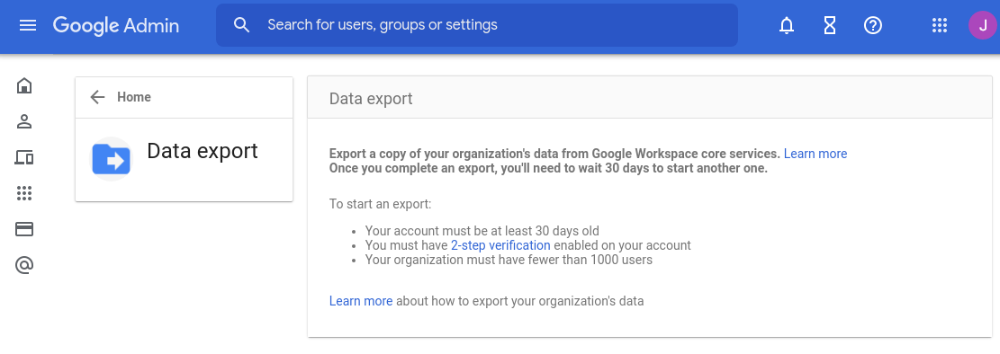
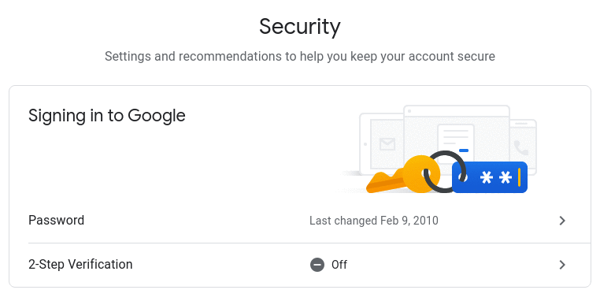
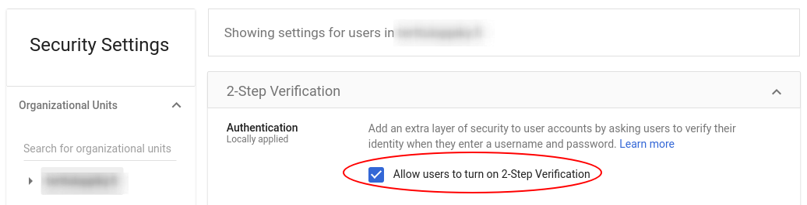

Google doesnt tell which requirement I don't pass

There are three requirements outlined, but they don’t reveal which one of them I don’t pass.
(I know it’s the two-factor thing, but that’s horrible UX.)
Detour: enabling 2FA
Now when I went on to enable 2-Factor authentication for my admin account, I didn’t initially see it there:

Above are the two versions of the same page. When “2-Step Verification” is missing, it means that you don’t have the permission to enable it.
I had to go turn “Allow users to turn on 2-Step Verification” from organization admin settings:

I wonder who in their right mind would think just hiding an UI element is the right thing to do, if the user doesn’t have the permission to do it. How about this instead:
2-Step Verification is disabled by your organization’s settings. You can ask your administrator to enable it.
(It could’ve even been visually minimal, just use passive color for the feature and there could be an info icon with tooltip explaining why the feature is disabled.)
Would this have been too clear for the users?
Hide UI element if user is not permitted is pervasive to the Google experience
There was a time when I wanted to write a review for an Android app, but I could not find the button under the app in the Play store.
Turns out if was because I was using an organization account, and I understand that organizations may want to limit their employees writing app reviews under the organization’s name, but is it acceptable that users are trying to find help on how to find the review feature, when it simply is hidden due to permission issues?
This type of UX is simply user-hostile by wasting their time wondering what they’re doing wrong, and just make them feel stupid when they can’t find an obvious feature.
Is Google really this incompetent to not think of such obvious usability issues like these? Is Google becoming the new Microsoft in incompetence?

Thanks for reading! 😍
If you like my writing, consider following me on Twitter.
Stay updated on my blog posts & projects - sign up for
my newsletter. 🚀
No spam, unsubscribe any time.
RSS also available.